Dungeon Defender est un jeu médiéval de survie développé à l'aide de Unity dans le cadre du cours de Simulation logicielle du programme Techniques de l'informatique.
Retour au portfolio
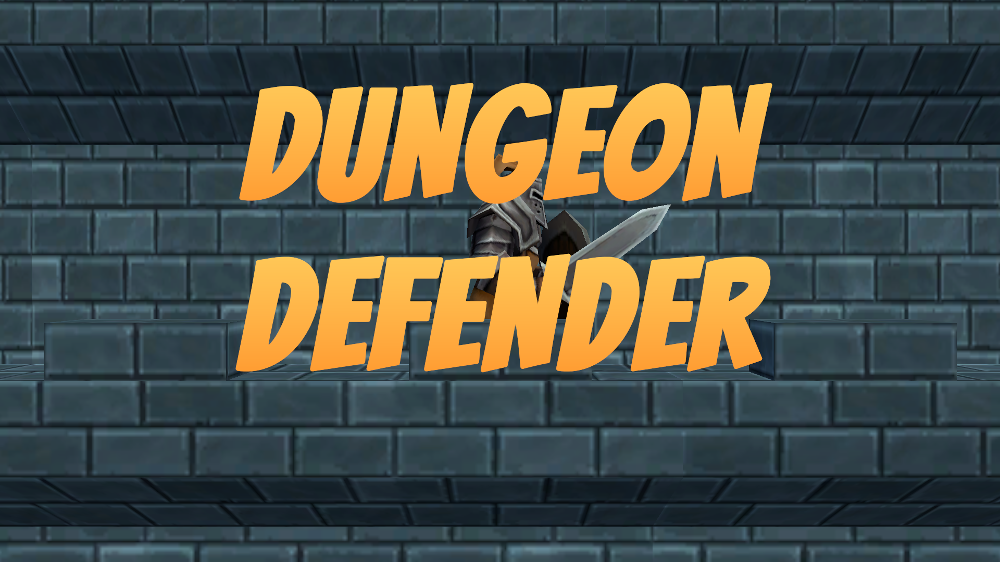
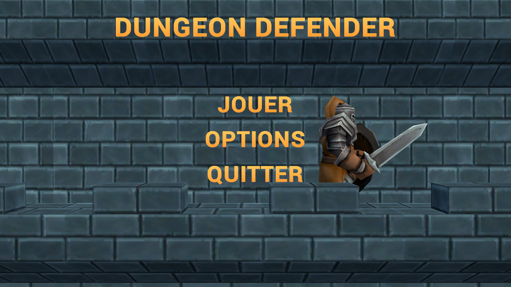
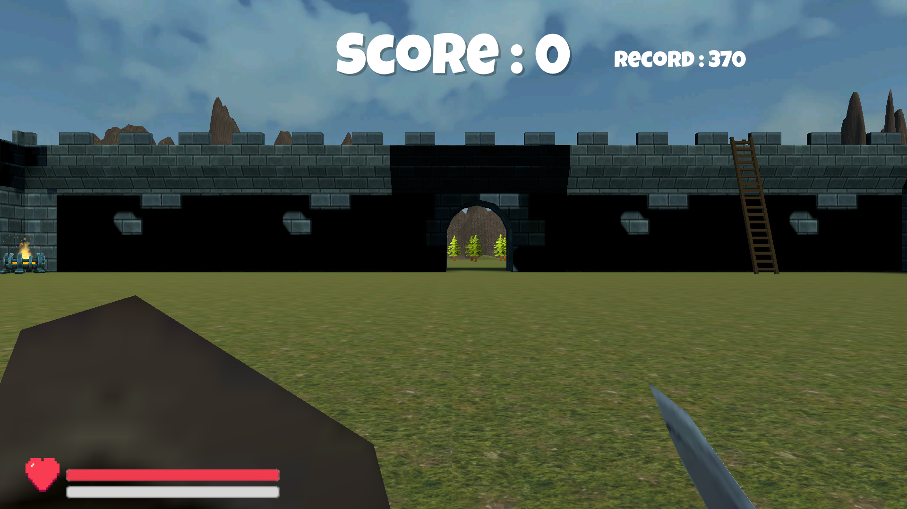
 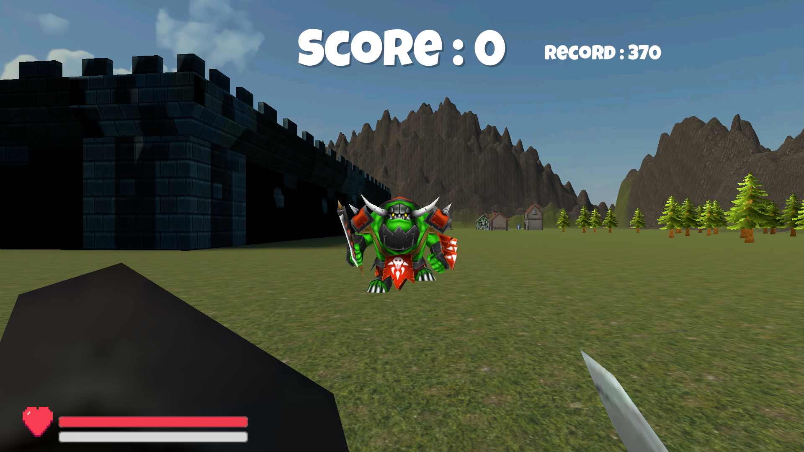
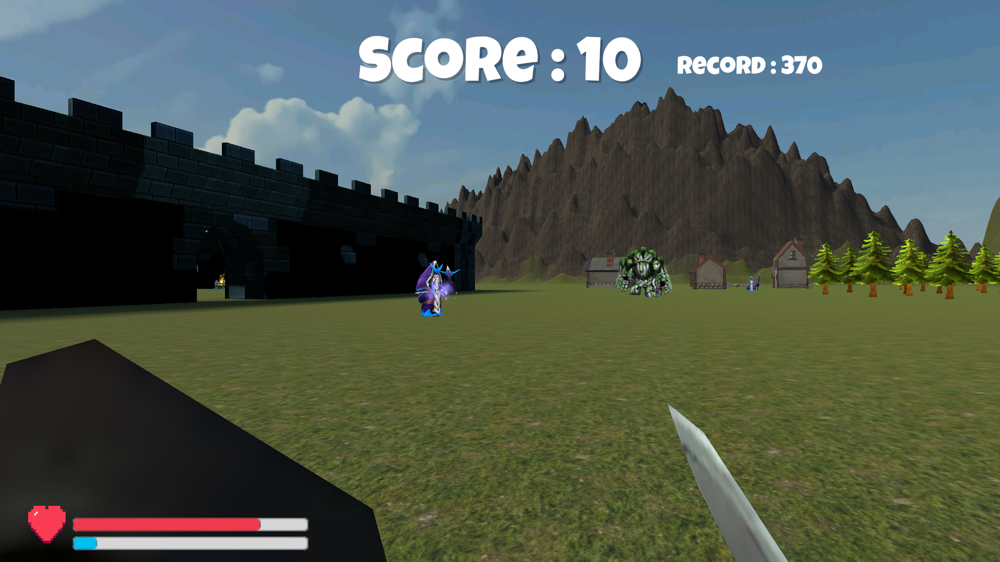
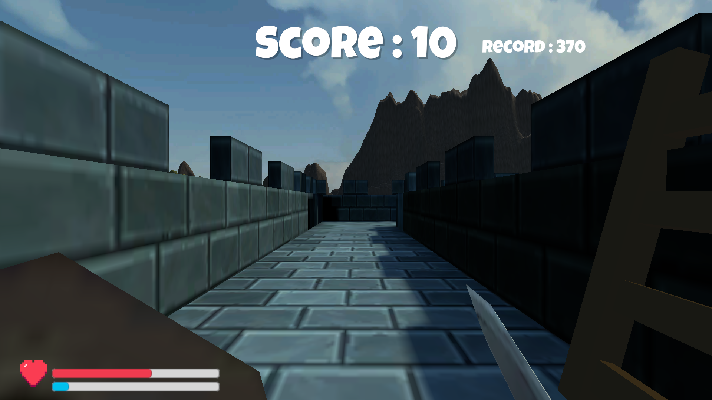
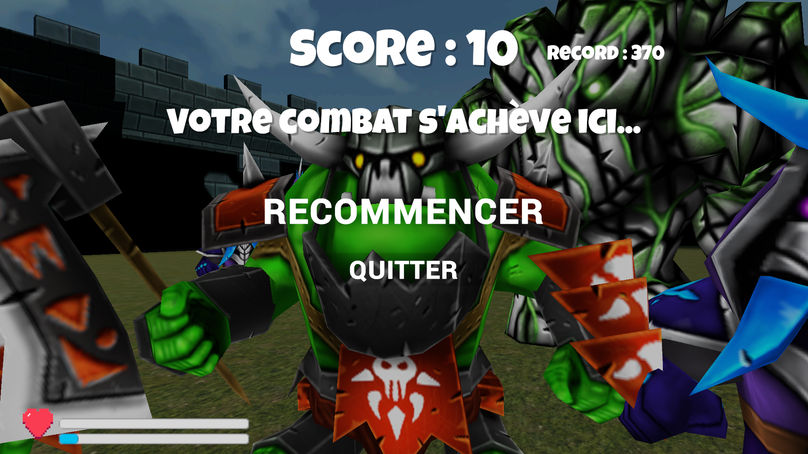
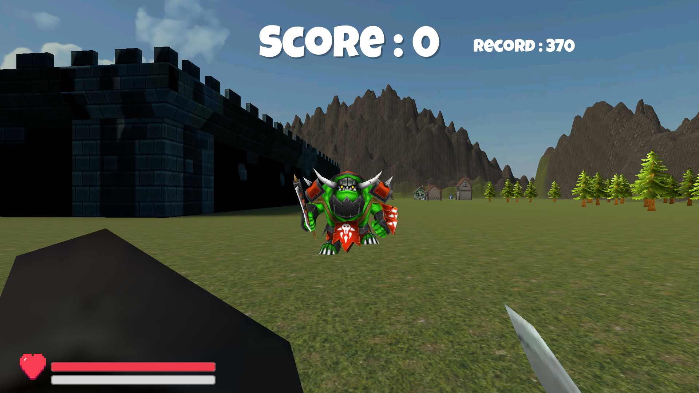
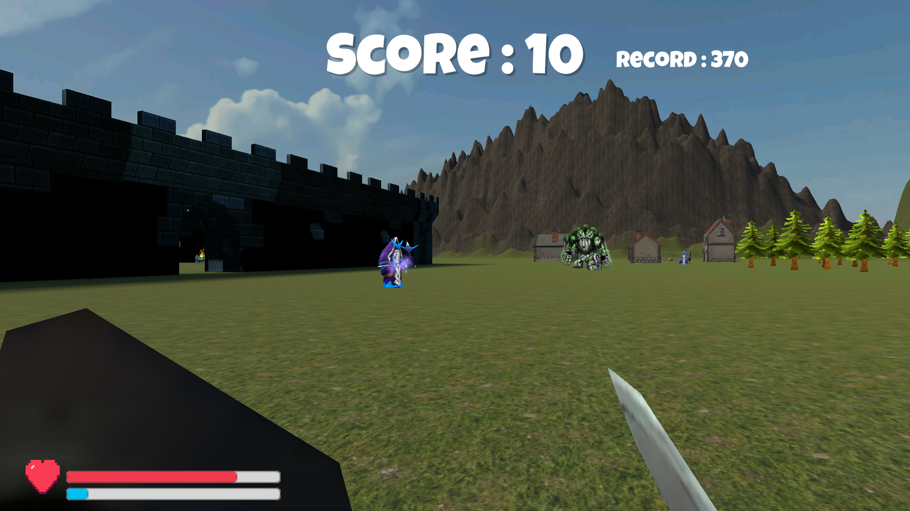
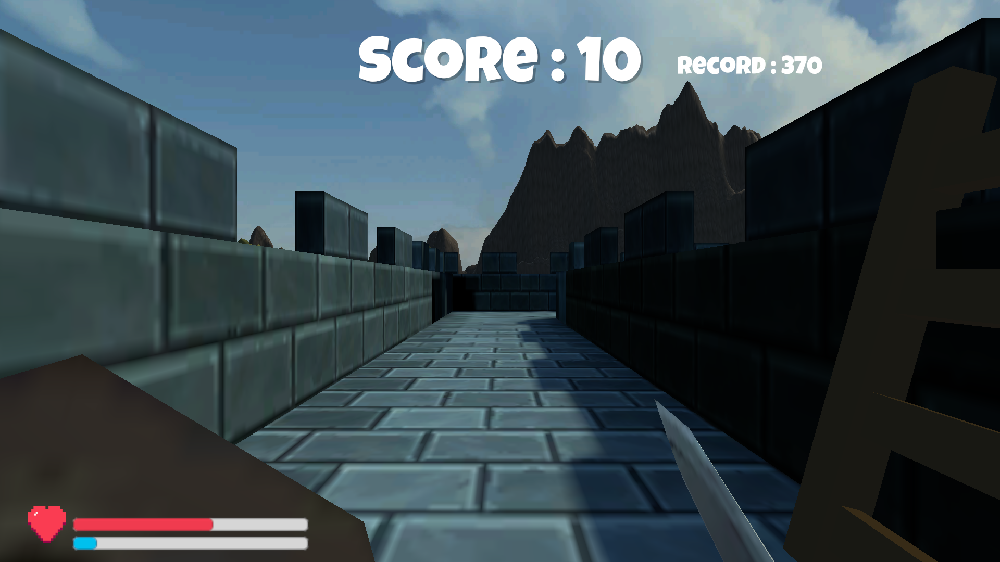
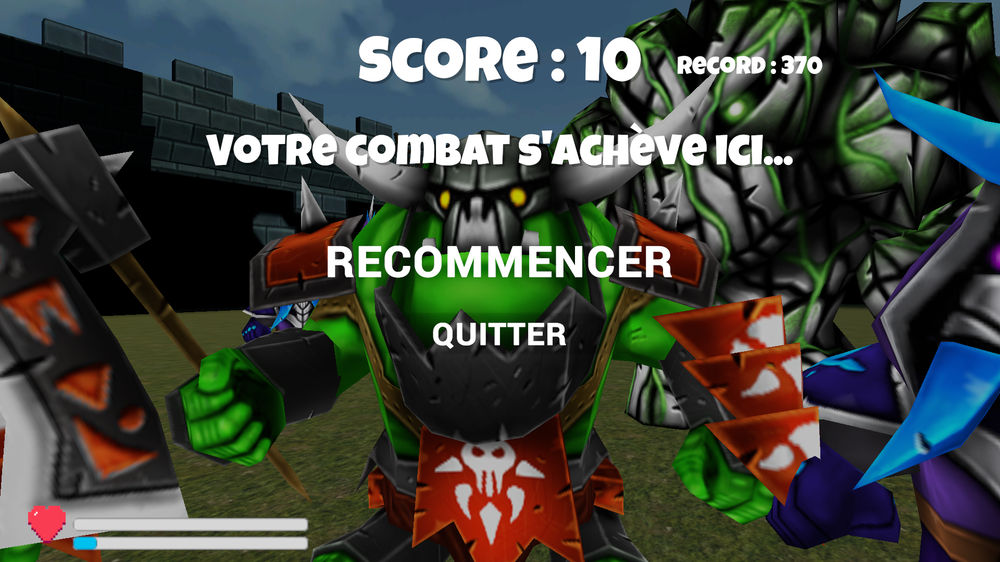
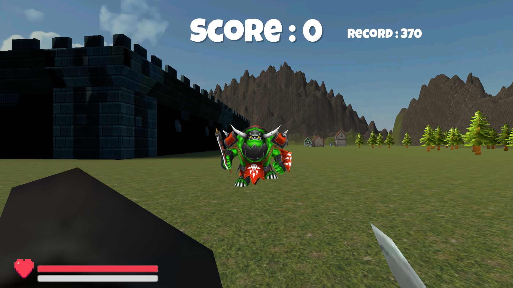
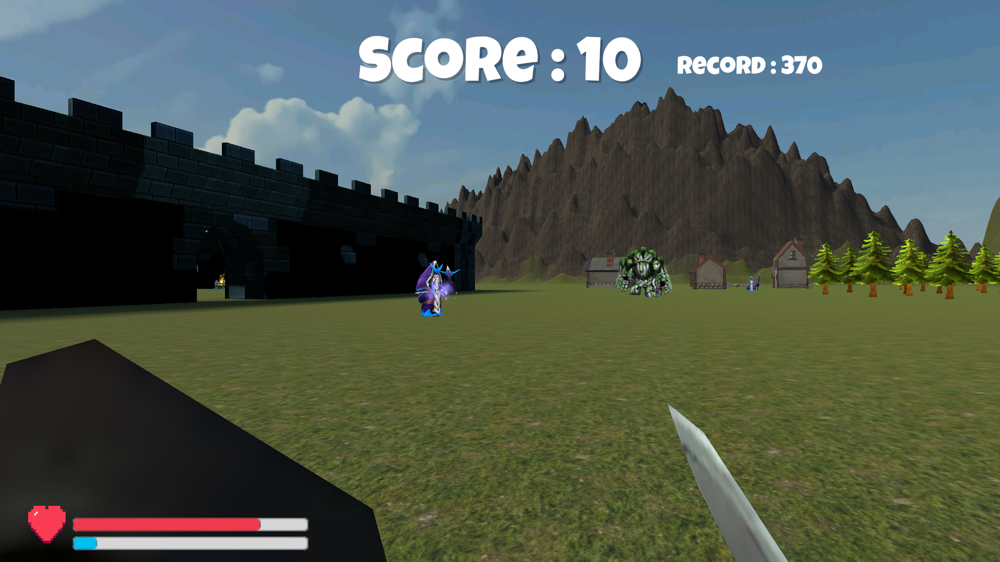
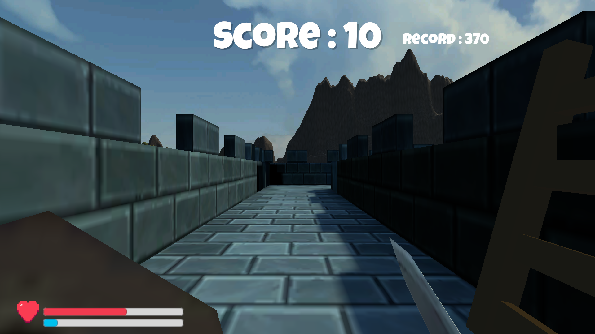
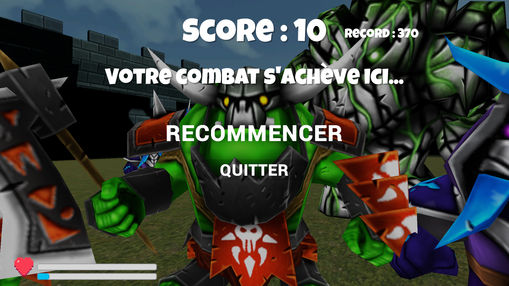